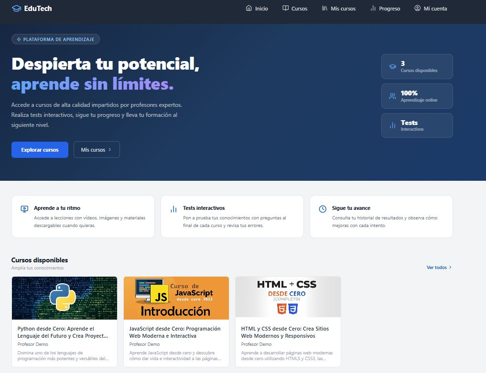

EduTech — Plataforma e-learning full-stack (TFG)
Monorepo con npm workspaces que integra un frontend en React + Vite y un backend en Express con base de datos PostgreSQL. Incluye autenticación con Google OAuth 2.0 (Passport) y cuentas locales con contraseña hasheada, control de acceso por roles (alumno/profesor/administrador), CRUD completo de cursos, lecciones y tests, y un backoffice de administración. La base de datos corre en Neon (PostgreSQL serverless) y el backend está desplegado en Render.
⚙️Tecnologías: React • Vite • Express • PostgreSQL • Passport (OAuth 2.0) • Neon • Render
La demo está en hosting de capa gratuita: espera unos 30 segundos a que arranque antes de probarla. Si aun así no responde, puedes ver la aplicación en funcionamiento con el botón «Ver capturas».